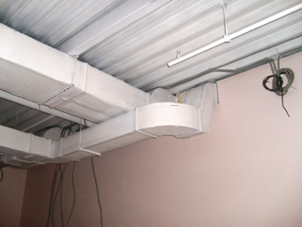

электромонтаж дачного дома в Санкт-Петербурге и Ленинградской обл. Частный электрик, недорого и качественно.
Телефон - 8 904 642 08 57 Николай.

Электрика на даче.
Скидки! Расценки посмотрите ниже! Позвоните!
Ни в одном здании, будь это квартира или частный дом, невозможно обойтись без электричества. Особенно, если это дачный домик, когда хозяева с нетерпением ждут наступления дачного сезона, чтобы отдохнуть некоторое время в приятной и здоровой обстановке. Находиться на даче будет вдвойне приятно, если здесь светло, комфортно и все электроприборы нормально функционируют.
Я, как частный электрик, не один год, отдавший электромонтажной сфере, знаю, сколько подводных камней существует в этой деятельности. Я обладаю всеми знаниями о видах электрических кабелей, их свойствах и преимуществах, о секретах проведения электрики на даче. Обладая всеми необходимыми знаниями и профессиональным оборудованием, я могу с уверенностью заявить, что мне по силам любая, даже самая ответственная, работа. Если Вас не устраивает электрическая сеть в доме, старая проводка не выдерживает возложенной на нее мощности, или Вы строите новый дом, где все должно быть оформлено на высочайшем уровне? Значит, Вам нужен Я профессиональный и опытный электрик, который сможет не только качественно выполнить электрические работы, но, при необходимости, проконсультирует по всем интересующим вопросам.
Предосторожность.
Стремление сделать все самому – самая распространенная ошибка многих заказчиков, с которыми я не раз сталкивался.
Начитавшись советов, многие покупают провода и оборудование, которое по техническим характеристикам не подходит для их случая. А некоторые, вообще, пытаются заняться установкой электропроводки самостоятельно. Хочу отметить и предупредить, электричество – это не та сфера, где можно самостоятельно чему-то научиться или пытаться что-то сделать, не имея при этом базовых знаний и опыта работы. В лучшем случае, элементарная замена розетки приведет к почернению обои, в худшем – пожар в связи с неисправности электропроводки. Электрика – услуга, которым должны заниматься исключительно опытные мастера с многолетним опытом работы.
Расценки на электромонтаж на даче.
|
Площадь пола в доме. |
Цены в рублях, если стены бетонные. |
Цены в рублях, с учётом материала для электромонтажа. |
|
Дача с полом 30 кв. метров. |
25 000 |
35 000 |
|
50 |
40 000 |
55 000 |
|
70 |
55 000 |
72 000 |
|
90 |
70 000 |
90 000 |
|
100 |
94 000 |
110 000 |
|
140 |
110 000 |
140 000 |
|
200 кв. метров. |
150 000 |
190 000 |
Этапы электромонтажа на даче.
Хозяин дачного дома должен не только нанять опытного специалиста, но и в дальнейшем хоть немного проконтролировать процесс. Это придаст ему уверенности, что нанятый человек делает все правильно, а также позволит выявить неквалифицированного работника.
Итак, многих интересует цена электрики на даче. Она зависит от многих факторов, например, срочность выполнения работы, сложность проекта и его трудоемкость. Я предлагаю приемлемую стоимость, и цена за мои услуги полностью соответствует качеству выполненной работы, а качеством Вы можете быть спокойны. Я гарантирую, что электрика на даче будет выполнена на высочайшем уровне.
1. Прежде всего, нужно заняться приготовлением объекта к работе. Тщательно изучается особенности постройки, учитываются пожелания клиента. Далее составляется проектирование внутреннего и внешнего электроснабжения. Важно, чтобы заказчик четко знал, где и какие электрические приборы он будет использовать. Чем подробней будет составлен проект, тем легче будет определить количество материала и их стоимость.
2. Выполняются работы по внешнему электромонтажу электрики на даче. Они выполняются в следующей последовательности:
- Монтаж электрощитов, трансформных подстанций;
- Выполняется перекладка кабельных воздушных и кабельных линий электропередач;
- Установка внешних электросетей;
- Монтаж распределительного щитка.
Электрика на даче довольно ответственное задание и этот этап носит в себе существенную значимость.
3. Дальше в электрике дачного дома выполняется прокладка внутренних электросетей. На этом этапе экономит не стоит. Очень часто неисправные автоматы и щиты являются самой распространенной причиной возгорания домов. Внутренний электромонтаж предусматривает монтаж или установку щита. Только после этого осуществляются работы с установкой коммутационной аппаратуры, также выполняется заземление и монтаж молниезащиты.
4. Проводятся внутренние работы, установка розеток, систем видеонаблюдения, пожарной сигнализации и многое другое.
5. Завершающий этап в установке электрики на даче – пуск монтируемой системы. Выполняется проверка установленной сети.
Хочу заметить, каждое оборудование имеет собственный срок эксплуатации. После его окончания или заранее изношенности, провода нуждаются в срочной замене. Также непрофессиональная установка может существенно сократить сроки электропроводки.
Как Вы успели заметить – электромонтаж дачного дома довольно ответственное мероприятие. Им не только невозможно заняться самостоятельно, если нет образования и специального оборудования, но и очень важно найти такого человека, который сможет грамотно оценить ситуацию и с умением качественно выполнить все работы:
- Монтаж и установка электрики на даче;
- Составление подробного плана по проведению электропроводки;
- Прокладка проводки разными способами: в коробках или в штробу;
- Замена старой автоматики на новую;
- Прокладка кабелей;
- И др.
Эти и многие другие работы опытный мастер электрик выполнит качественно и за обговоренные сроки. Вам нужна удобная, светлая дача – Я именно тот, кто сможет воплотить Ваши пожелания в реальность.
 Поменять проводку в квартире.
Поменять проводку в квартире. Сколько будут стоить материалы.
Карта сайта.
Замена электропроводки в панельном доме.
Расценки на электропроводку квартир.
Замена проводки в хрущевке.
Электромонтаж в частном доме.
Электрика в загородном доме.
Сколько стоит замена электропроводки в двухкомнатной квартире?.
Сколько стоит проложить проводку в 3 ком квартире?
Сколько стоит проложить проводку в четырех комнатной квартире?
Сколько стоит сделать внутреннюю проводку?.
Стоимость штробление стен.
Установка люстр и светильников.
Замена электропроводки в панельном доме.
Электромонтаж проводов в бане.
Электрика в загородном доме